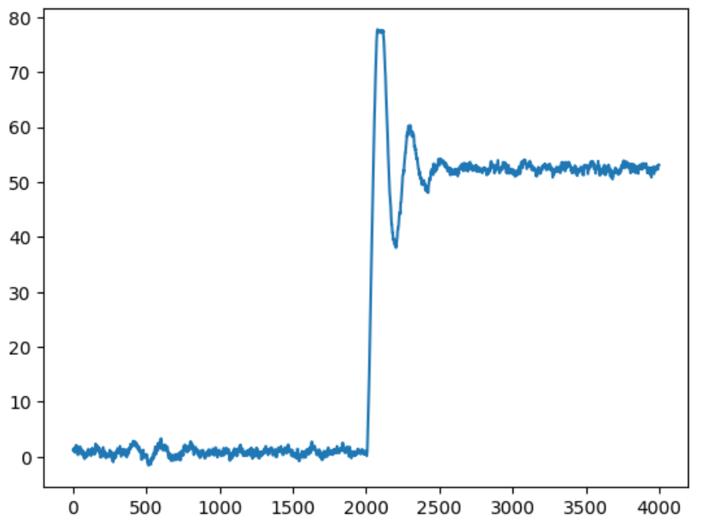
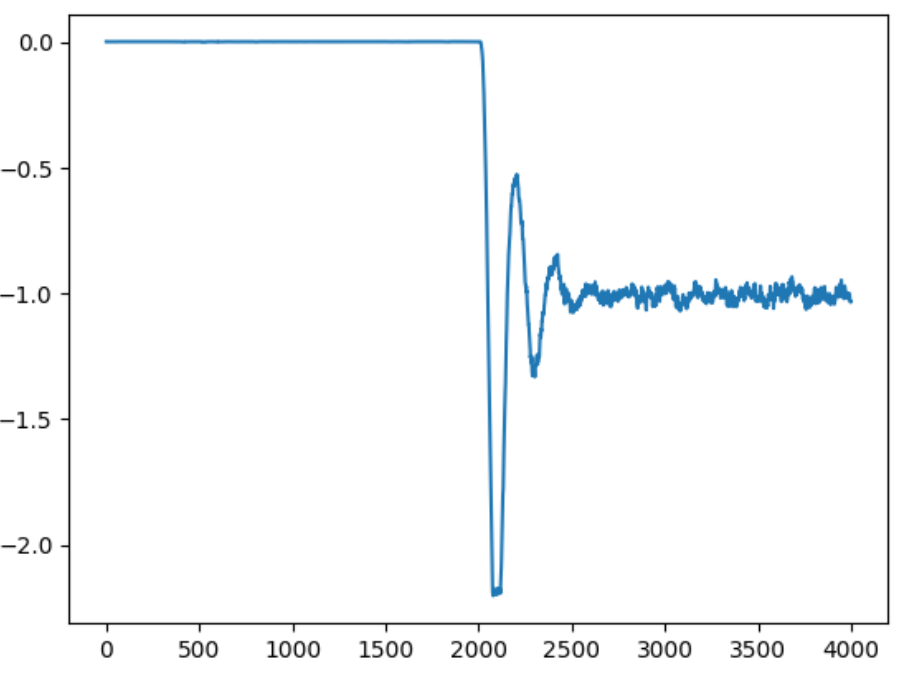
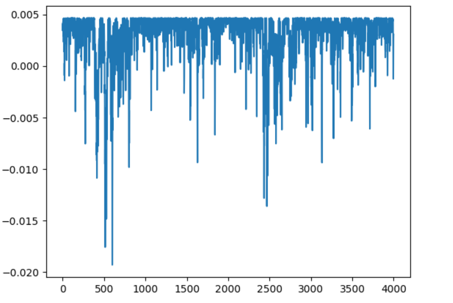
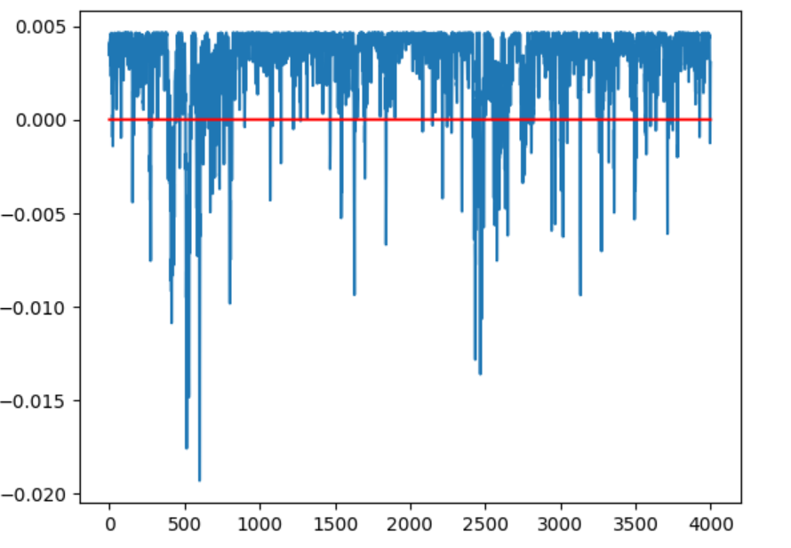
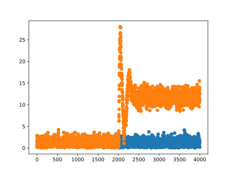
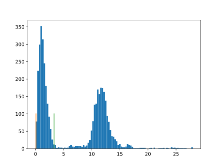

OCSVM&&BP&&RNN
One-Class-SVM
原理分析
代码展示- 线性核函数
必要库导入
import csv # 用于读取 csv 文件 #
import numpy as np
import matplotlib.pyplot as plt
import matplotlib.font_manager
from sklearn import svm
函数定义
读取函数
def read_row(filename, rowno):
data = []
with open(filename) as csvfile:
csv_reader = csv.reader(csvfile)
for row in csv_reader:
data.append(row[rowno])
for i in range(len(data)):
data[i] = float(data[i])
return data
试验过程
# 使用`svm.OneClassSVM(nu=0.1, kernel='linear').fit(myTrain)`,线性核函数来训练
trainSerialNum =[]
myTrain = read_row(r'/content/drive/MyDrive/Colab Notebooks/assets/Train_data.csv', 0)
myTest = read_row(r'/content/drive/MyDrive/Colab Notebooks/assets/Test_data1.csv', 0)
for i in range(4000):
trainSerialNum.append(i)
for i in range(len(myTrain)):
myTrain[i]=[myTrain[i]]
for i in range(len(myTest)):
myTest[i]=[myTest[i]]
clf = svm.OneClassSVM(nu=0.1, kernel='linear').fit(myTrain)
myTrain=np.array(myTrain)
myTest=np.array(myTest)
y_pred_train = clf.predict(myTrain)
y_pred_test = clf.predict(myTest)
print("train",y_pred_train[1900:2100])
print("test",y_pred_test[1900:2100])
Z = clf.decision_function(myTest.reshape(-1, 1))
plt.plot(trainSerialNum,Z)
plt.show()
print(Z)
输出
数据到超平面的距离-线性核函数
所以我们引入高斯核函数来升维
svm.OneClassSVM(nu=0.1, kernel='rbf',gamma=0.1).fit
import csv # 用于读取 csv 文件 #
import numpy as np
import matplotlib.pyplot as plt
import matplotlib.font_manager
from sklearn import svm
def read_row(filename, rowno):
data = []
with open(filename) as csvfile:
csv_reader = csv.reader(csvfile)
for row in csv_reader:
data.append(row[rowno])
for i in range(len(data)):
data[i] = float(data[i])
return data
trainSerialNum =[]
myTrain = read_row(r'/content/drive/MyDrive/Colab Notebooks/assets/Train_data.csv', 0)
myTest = read_row(r'/content/drive/MyDrive/Colab Notebooks/assets/Test_data1.csv', 0)
for i in range(4000):
trainSerialNum.append(i)
for i in range(len(myTrain)):
myTrain[i]=[myTrain[i]]
for i in range(len(myTest)):
myTest[i]=[myTest[i]]
clf = svm.OneClassSVM(nu=0.1, kernel='rbf',gamma=0.1).fit(myTrain)
myTrain=np.array(myTrain)
myTest=np.array(myTest)
y_pred_train = clf.predict(myTrain)
y_pred_test = clf.predict(myTest)
print("train",y_pred_train[1900:2100])
print("test",y_pred_test[1900:2100])
Z = clf.decision_function(myTest.reshape(-1, 1))
plt.plot(trainSerialNum,Z)
plt.show()
print(Z)
n_error_train = y_pred_train[y_pred_train == -1].size
n_error_test = y_pred_test[y_pred_test == -1].size
print("训练集错误个数",n_error_train)
print("测试集错误个数",n_error_test)
输出
数据到超平面的距离-高斯核函数
nu=0.1

nu=0.01


我们再把nu调小到0.01
分界线变得更宽
[0.28405475]
[0.24934578]
可以看到范围更加宽容效果更好，同时误报率更低了

可以看到正常数据和异常数据被很明显的区分开了
BP神经网络
# import 必要的库
import numpy as np
import csv # 用于读取 csv 文件 #
import numpy as np
import matplotlib.pyplot as plt
# 定义 sigomoid 函数
def sigmoid(x, deriv = False):
if(deriv == True):
return x*(1-x)
else:
return 1/(1+np.exp(-x))
# 定义读取函数
def read_row(filename, rowno):
data = []
with open(filename) as csvfile:
csv_reader = csv.reader(csvfile)
for row in csv_reader:
data.append(row[rowno])
for i in range(len(data)):
data[i] = float(data[i])
return data
def read_array(filename):
data = []
with open(filename) as f:
reader = csv.reader(f)
# print(type(reader))
for row in reader:
# print(row)
data.append(row)
return data
def read_all(filename):
data = []
with open(filename) as csvfile:
csv_reader = csv.reader(csvfile)
for row in csv_reader:
data.append(row)
for i in range(len(data)):
for j in range(len(data[0])):
data[i][j] = float(data[i][j])
return data
train_data = np.array(read_all(r'/content/drive/MyDrive/Colab Notebooks/assets/Train_data.csv'))
test_data1 = np.array(read_all(r'/content/drive/MyDrive/Colab Notebooks/assets/Train_data.csv'))
# test_data2 = np.array(read_all(r'.\Test_data2.csv'))
normal_data = train_data - np.mean(train_data,axis=0)
normal_data = normal_data / np.max(normal_data,axis=0)
# normal_data = 1 / (1 + np.exp(-1*normal_data))
# 输出4000个行向量形式的归一化的训练样本
# print(normal_data)
row_data = read_array(r'/content/drive/MyDrive/Colab Notebooks/assets/Train_data.csv')
row_data_test = read_array(r'/content/drive/MyDrive/Colab Notebooks/assets/Train_data.csv')
row_data=np.array(row_data).astype(float)
row_data_test=np.array(row_data_test).astype(float)
trainSerialNum =[]
myTrain = read_row(r'/content/drive/MyDrive/Colab Notebooks/assets/Train_data.csv', 0)
myTest = read_row(r'/content/drive/MyDrive/Colab Notebooks/assets/Test_data1.csv', 0)
for i in range(4000):
trainSerialNum.append(i)
X =normal_data
X =sigmoid(X)#套sigmoid
w=0.1 #学习率
print("x=\n",X)
#output dataset
y = X
print(y.shape)
定义权重
weight01 = 2*np.random.random(( X.shape[1] ,4)) - 1
weight12 = 2*np.random.random((4,2)) - 1
weight23 = 2*np.random.random((2,y.shape[1])) - 1
# print(weight01,"\n",weight12,"\n",weight23)
#初始化偏倚
b1 = 2*np.random.random((1,4)) - 1
b2 = 2*np.random.random((1,2)) - 1
b3 = 2*np.random.random((1,y.shape[1])) - 1
bias1 = b1
bias2 = b2
bias3 = b3
for i in range(X.shape[0]-1):
bias1 = np.vstack((bias1,b1))
for i in range(X.shape[0]-1):
bias2 = np.vstack((bias2,b2))
for i in range(X.shape[0]-1):
bias3 = np.vstack((bias3,b3))
开始训练
for j in range(6000):
I0 = X
O0=I0
# 输入层
I1=np.dot(O0,weight01)+bias1
O1=sigmoid(I1)
I2=np.dot(O1,weight12)+bias2
O2=sigmoid(I2)
I3=np.dot(O2,weight23)+bias3
O3=sigmoid(I3)
f3_error = y-O3
f3_delta = f3_error*sigmoid(O3,deriv = True)
f2_error = f3_delta.dot(weight23.T)
f2_delta = f2_error*sigmoid(O2,deriv = True)
f1_error = f2_delta.dot(weight12.T)
f1_delta = f1_error*sigmoid(O1,deriv = True)
weight23 += O2.T.dot(f3_delta)*w #调整权重
weight12 += O1.T.dot(f2_delta)*w
weight01 += O0.T.dot(f1_delta)*w
bias3 += f3_delta*w #调整偏倚
bias2 += f2_delta*w
bias1 += f1_delta*w
输出结果
输出结果
[1978, 32, 1968, 22]
RNN & LSTM
函数定义-数据读取
import os
os.environ['KMP_DUPLICATE_LIB_OK']='True'
import csv # 用于读取 csv 文件 #
import matplotlib.pyplot as plt # 用于绘图 #
import numpy as np
import tensorflow
def read_all(filename):
data = []
with open(filename) as csvfile:
csv_reader = csv.reader(csvfile)
for row in csv_reader:
data.append(row)
for i in range(len(data)):
for j in range(len(data[0])):
data[i][j] = float(data[i][j])
return data
train_data = np.array(read_all(r'.\Train_data.csv'))
test_data1 = np.array(read_all(r'.\Test_data1.csv'))
# test_data2 = np.array(read_all(r'.\Test_data2.csv'))
normal_train_data = train_data - np.mean(train_data,axis=0)
normal_train_data = normal_train_data / np.max(normal_train_data,axis=0)
normal_train_data = 1 / (1 + np.exp(-1*normal_train_data))
normal_train_data = np.array(normal_train_data)
normal_test_data = test_data1 - np.mean(train_data,axis=0)
normal_test_data = normal_test_data / np.max(normal_test_data,axis=0)
normal_test_data = 1 / (1 + np.exp(-1*normal_test_data))
normal_test_data = np.array(normal_test_data)
X_train = []
y_train = []
for i in range(32, normal_train_data.shape[0]):
X_train.append(normal_train_data[i-32:i, 0])
y_train.append(normal_train_data[i,0])
X_train = np.array(X_train)
y_train = np.array(y_train)
X_train = np.reshape(X_train, (X_train.shape[0], X_train.shape[1], 1))
regressor = tensorflow.keras.models.Sequential()
regressor.add(tensorflow.keras.layers.LSTM(units = 32, return_sequences = True, input_shape = (X_train.shape[1], 1)))
regressor.add(tensorflow.keras.layers.Dropout(0.1))
regressor.add(tensorflow.keras.layers.LSTM(units = 32, return_sequences = True))
regressor.add(tensorflow.keras.layers.Dropout(0.1))
regressor.add(tensorflow.keras.layers.LSTM(units = 32))
regressor.add(tensorflow.keras.layers.Dropout(0.1))
regressor.add(tensorflow.keras.layers.Dense(units = 1))
regressor.compile(optimizer = 'adam', loss = 'mean_squared_error')
print(regressor.summary())
regressor.fit(X_train, y_train, epochs = 50, batch_size = 40)
def multi_predict(known, predict):
while(predict):
var = regressor.predict(known[-32:].reshape(1,32,1))
print(var)
known = np.concatenate((known, var))
predict -= 1
return known
test = X_train[0]
print(test)
test = multi_predict(test, 1968)
print(test)
plt.plot(normal_test_data[32:,0], color = 'red')
plt.plot(test[32:], color = 'blue')
plt.show()